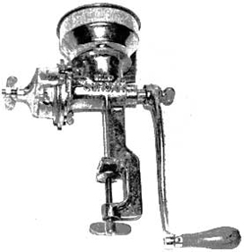
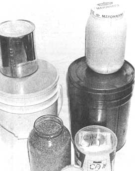
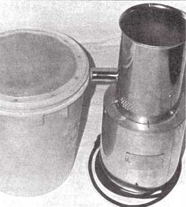
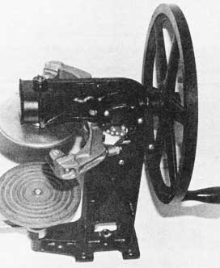
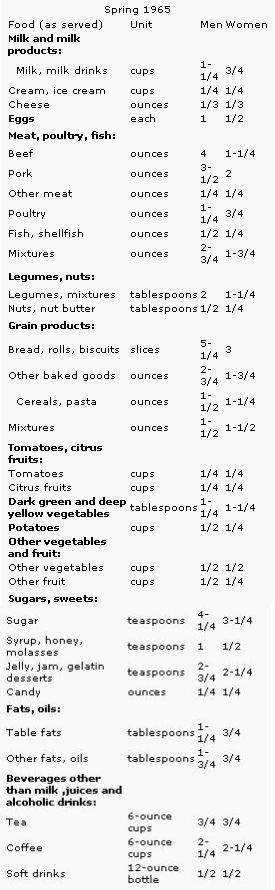
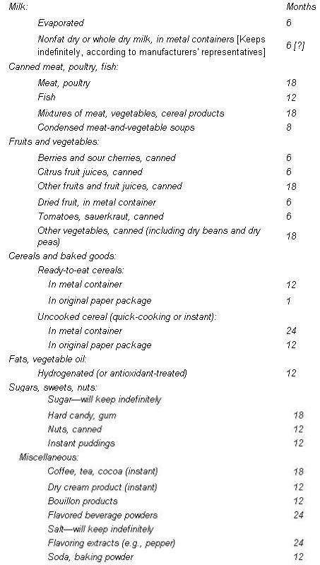

A hand grain grinder does much to raise
your standard of living under survival conditions, and
is quite adequate for small-scale home milling.
The following chart, taken from page 272 of Food For Us All, the USDA's Yearbook of Agriculture for 1969, might give you some idea of an average person's daily food intake. Remember, however, that if you're living on only wheat, milk and sugar, your consumption of those items will be much greater than indicated here.
AVERAGE AMOUNTS OF FOOD EATEN IN ONE DAY BY MEN AND WOMEN 20 TO 34 YEARS OLD
A year's supply of food, clothing and household items-built up over a period of time-can help you and your family survive almost any major problem that might come your way. To do the job right, however, takes some long-range planning and the first consideration must be food. Which raises the questions of "What?" and "How much?".
What constitutes "a year's supply of food" depends on the sexes, ages and needs of the members of your family. The following might be a very basic ration for an average woman:
Wheat . . . . . . . . . . . . . . . . . . . . . . . . . 360 pounds
Milk (non-fat dried, not instant) . . . . . . . .100
Sugar (honey preferred) . . . . . . . . . . . . .100
Salt . . . . . . . . . . . . . . . . . . . . . . . . . . . 5
The above items alone should provide the adult female's recommended daily requirement of 2,300 calories. Since most men need more and children less, you can store the same amounts for each family member and the total will just about average out.
Besides the four essentials, the following extras might be stored:
Shortening . . . . . . . . . . . . . . . . . . . . . . . 15 pounds
Dry yeast . . . . . . . . . . . . . . . . . . . . . . . .1/2 pound
Multiple vitamins . . . . . . . . . . . . . . . . . . .365 capsules
Dried peas, beans (assorted), potatoes and soups would also be good additions to the basic ration . . . as would Jell-O, which keeps indefinitely.
By the way, if you expand your reserve beyond the bare necessities, choose only foods your family will eat! An emergency is a poor time to introduce unfamiliar items into a person's diet. The psychological shock of the new situation or problem will cause people to reject unusual food to the extent that they will go hungry rather than eat it. Quite often, it's this "cultural shock" that disables and kills in times of crisis.
"How can I afford enough extra food for a whole year?" you may be wondering. As an answer, let's set up a buying program that will-within twelve months-accumulate a one-year reserve for a family of four. Our hypothetical people will need four times 365 pounds of wheat, or 1,460 pounds. If we round the figure off to 1,200 pounds and leave the odd 300 to be obtained later, that's one 100-pound sack which must be purchased every month. The 400-pound quota of sugar can be bought as one five-pound and three ten-pound bags monthly (and at that rate, the family will end up with 20 pounds extra). A 50-pound sack of milk added every four weeks will build up to a year's supply in just eight months. Canned goods can be laid away by picking up a few extra items each shopping trip.
To find a source of wheat, look under the following head ings in the Yellow Pages of your local telephone directory: Flour, Grain brokers, Grain dealers, Food brokers, Cereals. When you inquire, specify that the grain is for human consumption and must be untreated. Some of the same businesses also carry bulk alfalfa and cress seeds, mung beans and other items that are good for sprouting . . . and if you don't know how to grow sprouts for fresh vegetables, you've no idea what you're missing.
Wholesale grocers and wholesale and retail dairies are likely sources for dry milk in 50- and 100-pound sacks.
Since lack of space is always a problem-and the most frequent excuse for not storing food-in modern homes, let's dismiss at once the old complaint, "We just don't have any room!" If you want to do something badly enough, you'll think about it and find a way.
Remember that food must be kept cool, dry and away from direct light (sunlight, etc.). If your attic and basement are unsuitable for the storage of edibles, move other items into those areas and fit your stockpile into the space you've cleaned out. You can always tuck canned goods and wheat in meta containers under the bed.
The following five principles are essential to good storage:
[1] Sanitation is a must in all phases of a food reserve program. Use containers that are insect-proof, rodent-proof and perfectly clean.
[2] Air exclusion. Foods such as wheat and milk should be sealed in airtight (or almost airtight) metal and plastic cans for long-term storage.
[3] Temperature control. Two figures are critical: Food should be kept at a temperature above 32° F (freezing) and below 50° (the point at which fungi and insects become active).
[4] Inventory. It's important to keep an accurate record of what has been stored. Date each container as it's filled, and individual items as they're added to your cache. A good inventory should list all edibles by quantity, variety and date of storage, and will show when a year's supply of each food has been laid by. Duplicate copies should be kept handy: one with the supply, one to take shopping and one in the kitchen for ready reference.
[5] Rotation of canned goods is really essential. Wheat also needs to be eaten and replaced to keep it as fresh as possible, since the grain might have to be used for seed as well as for food.
Containers for your reserve may be either new or used. Make sure, though, that any recycled units were designed to hold food and are safe to use for that purpose. Be especially careful about plastics . . . some of them are toxic.
A few phone calls and personal visits to various businesses will help you find storage containers . . . new or otherwise. Check the Yellow Pages of your local phone book-or see the library or telephone office for directories of towns around you-and contact firms under the following listings: Bakers, wholesale and retail (try for used jars and cans); Bakers' supplies (new); Candy and confectionary manufacturers (used); Food brokers (new?); Food products (used); Plastics, molders and manufacturers (new); Restaurants and restaurant supplies (used).
Wheat can be stored for a long, long time if it's kept dry and cool and is packed in tightly closed cans. If necessary, the lids can be taped to insure a better seal (this is especially useful in the case of recycled containers).
If you store wheat in plastic jars, remember that all such materials "breathe" and allow moisture and gases to pass through to the grain inside. Thin membranes are of course more permeable than thicker ones, so take care when you select plastic containers for any seeds.
Wheat which is at the correct moisture level (10% or less) when put away should keep for 10 to 20 years. . . although it might not retain its viability for that length of time. Other grains, seeds, beans and peas can be handled in the same way and will last for long periods.
(EDITOR'S NOTE: Some people who are experienced in the long-term storageof wheat and other grains-such as Kris Torrey, whose article on the subject appeared in MOTHER NO. 29-recommend taking additional steps to protect grain from insects. "Drop two ounces of crushed dry ice into a five-gallon metal can full of wheat and leave the container's lid sitting loosely on the can until the dry ice evaporates into carbon dioxide. Then- and only then -screw the lid on tight. If you prefer not to handle dry ice, throw a handful of diatomaceous earth-the fossil remains of one-cell marine diatoms-into each filled can. Neither the carbon dioxide nor the dlatomaceous earth will hurt you when you eat the wheat or whatever . . . but either will prevent insects from infesting your grain.")
Sugar can be stored in 10-pound bags in any dry place. If kneaded or turned over every few months to keep it from hardening, it will keep indefinitely. Salt, too, will stay good for unlimited periods and can be left in its original boxes (as long as they don't get wet).
Milk is a trickier substance than the other basic foods. According to the head chemist for a large dairy, the product-when dried-can be kept as long as desired in a cool, dry place. It is, however, subject to oxidation . . . which may make it unpalatable to drink but doesn't affect its nutritional properties or usefulness in cooking. You can avoid such loss of flavor by filling containers to the brim with dried milk so as to leave as little air space as possible.
What about foods other than the essential four? The following information on the storage and shelf life of various items is quoted from the USDA's Home and Garden Bulletin No. 77, Family Food Stockpile for Survival, available free from the U.S. Department of Agriculture, Office of Information, Washington, D.C. 20250:
To maintain the eating quality of your reserve food supply, keep canned foods in a dry place, where the temperature is fairly cool. . . preferably not above 70° F and not below freezing.
Protect food in paper boxes from rodents and insects by storing boxes in tightly closed cans or other metal containers. This also extends the lengthoftime the boxes can be stored.
Eating quality was the first consideration in setting the maximum replacement periods given on this page. Many food Items will be acceptable for a much longer periodifstorage temperatures do not exceed 70° F. Mostofthe foods suggested in this table would be safe to use after longer storage periods.
As time approaches for the replacementofparticular food items, it is a good idea to use the food in family meals. As food Items are used, replace them in the stockpile with fresh supplies. When you put in fresh supplies, put them at the backofthe stockpile, keeping older supplies in front. Date all items with date purchased.
A FOOD STORAGE BIBLIOGRAPHY
The following works may be ordered from Bookcraft Publishers, 1848 West 2300 South, Salt Lake City, Utah 84120:
Family Storage Plan by Bob R. Zabriskie, $1.95
Wheat For Man-Why and How by V. Rosenvall, M. Miller and D. Flack, $1.95 (also available from MOTHER'S Bookshelf)
Passport to Survival by Esther Dickey, $3.95 (also available from MOTHER'S Bookshelf)
Three further publications are available from the U.S. Department of Agriculture, Office of Information, Washington, D.C. 20250:
Home and Garden Bulletin No. 77, F amily Food Stockpile for Survival (free) Yearbook of Agriculture 1961, Seeds ($2.00)
Yearbook of Agriculture 1969, Food For Us All ($5.95 . . . or try a request to your Congressman, who may be able to send you the Yearbooks free of charge)
I also recommend the following:
How to Live Through a Famine by Dean L. Rasmussen, $2.95 from Hawkes Publishing Inc., P.O. Box 15711, Salt Lake City, Utah 84115
Make a Treat With Wheat by Hazel Richards, $2.25 from Hawkes Publishing, or from the author at 2857 Hermosa Way, Salt Lake City, Utah 84117
Food Crisis Survival Manual by Survival Arts, $3.95 plus postage from P.O. Box 561, Salem, Oregon 97308
Everything You Want to Know About Honey by P.E. Norris, $ .75 from Pyramid Books, 9 Garden Street, Moonachie, N.J. 07074.
SPECIAL NOTE: This is the first section of a two-part article. The second installment-on the storage of garden seeds to preserve their viability-will appear in a forthcoming issue.
Royce Carl is the originator and president of the National Food Storage Association, a non profit organization for the encouragement of survival planning. Questions on the subject may be sent to him at 5805 114th N.E., Kirkland, Washington 98033. A stamped, self-addressed envelope would be helpful.-MOTHER.
|
 The hand can sealer has heads to accommodate containers of all sizes. . . but is probably notapractical investment unless you plan to can for friends. |
 For long-term storage, food should be carefully packed in airtight containers like these. Lids can be sealed with tape for added protection. |
 This electric grain grinder is one of many types on the market. Such a device is almost essential if large amounts of flour, cereal, etc., are needed. |
|
 The hand can sealer has heads to accommodate containers of all sizes. . . but is probably notapractical investment unless you plan to can for friends. |
 |
 |